Lab6_Modeling Registers and Counters
Introduction
When several flip-flops are grouped, with a common clock to hold related information, the resulting circuit is called a register. Just like flip-flops, registers may also have other control signals. You will understand the behavior of a register with additional control signals. Counters are widely used in sequential circuits. In this lab, you will model registers and counters in several ways.
Registers
In a computer system, related information is often stored simultaneously. A register stores bits of information so that systems can write to or read out all the bits simultaneously. Examples of registers include data, address, control, and status. Simple registers will have separate data input and output pins but clocked with the same clock source. A simple register model is shown below.
module Register (input [3:0] D, input Clk, output reg [3:0] Q);
always @(posedge Clk)
Q <= D;
endmodule
Notice that this is similar to a simple D Flip-flop with multiple data ports.
The simple register will work where the information needs to be registered every clock cycle. However, there are situations where the registered content should be updated only when a certain condition occurs. For example, a status register in a computer system gets updated only when certain instructions are executed. In such a case, a register clocking should be controlled using a control signal. Such registers will have a clock-enabled pin. A model of such a register is given below.
module Register_with_synch_load_behavior(input [3:0] D, input Clk, input
load, output reg [3:0] Q);
always @(posedge Clk)
if (load)
Q <= D;
endmodule
Another desired behavior of registers is to reset the content when a certain condition occurs. A simple model of a register with synchronous reset and load (reset has a higher priority overload) is shown below
module Register_with_synch_reset_load_behavior(input [3:0] D, input Clk,
input reset, input load, output reg [3:0] Q);
always @(posedge Clk)
if (reset)
begin
Q <= 4'b0;
end else if (load)
begin
Q <= D;
end
endmodule
Part6-1-1
Model a 4-bit register with synchronous reset and load using the abovementioned model. Develop a testbench and simulate the design. Assign Clk, D input, reset, load, and output Q.
lab6_1_1.v
module Register_with_synch_reset_load_behavior(
input [3:0] D, input Clk,
input reset, input load, output reg [3:0] Q);
always @(posedge Clk)
if (reset)
begin
Q <= 4'b0;
end else if (load)
begin
Q <= D;
end
endmodule
- View the schematic of the synthesized design
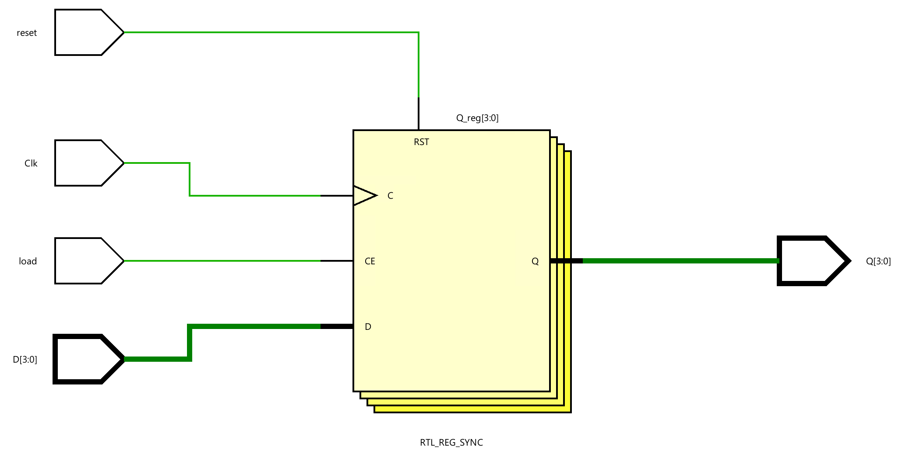
- Develop a testbench to test (see waveform above), perform behavioral simulation for 100ns, and validate the design.
tb.v
module tb();
reg clk;
reg [3:0] D;
reg reset;
reg load;
wire [3:0] Q;
Register_with_synch_reset_load_behavior test(
.Clk(clk),
.D(D),
.reset(reset),
.load(load),
.Q(Q)
);
initial begin
clk <= 0;
reset <= 0;
load <= 0;
D <= 4'd0;
#10;
D <= 4'b0101;
#60;
load <= 1;
#40;
D <= 4'b1001;
load <= 0;
#40;
load <= 1;
#30;
load <= 0;
#10;
reset <= 1;
end
always #10 clk = ~clk;
endmodule
We can run Simulation to check the code by clicking the Run Simulation under the SIMULATION and choose the first Run Behavioral Simulation.
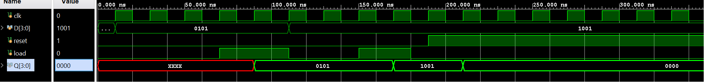
Part6-1-2
In some situations, it is necessary to set the register to a pre-defined value. For such a case, another control signal, called set, is used. Typically, in such registers, reset will have a higher priority over set, and set will have a higher priority over load control signal.
Model a 4-bit register with synchronous reset, set, and load signals. Assign Clk, D input, reset, set, load, and output Q.
lab6_1_2.v
module four_bit_register(
input wire Clk,
input wire [3:0] D,
input wire reset,
input wire set,
input wire load,
output reg [3:0] Q
);
// Synchronous reset, set, and load
always @(posedge Clk) begin
if (reset) begin
// Synchronous reset
Q <= 4'b0000;
end else if (set) begin
// Synchronous set
Q <= 4'b1111;
end else if (load) begin
// Load data into the register
Q <= D;
end
// No 'else' statement needed, as we don't want to change the state in any other case
end
endmodule
- view the schematic of the synthesized design
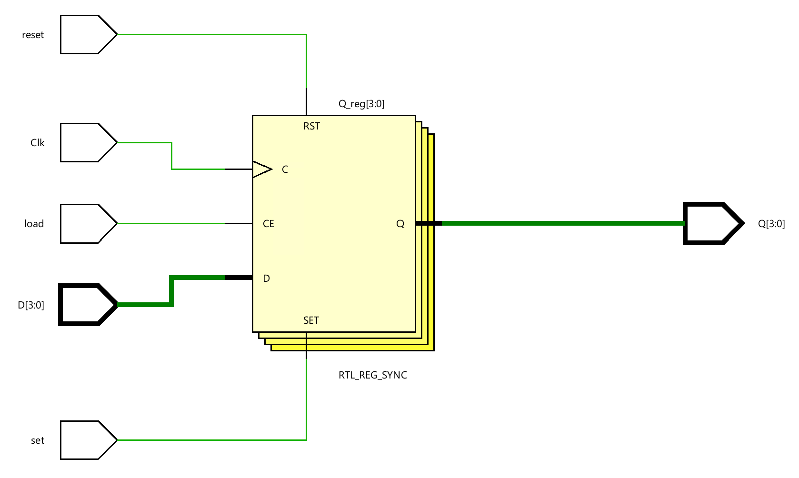
- Develop a testbench to test (see waveform above), perform behavioral simulation for 100ns, and validate the design.
tb.v
module tb_four_bit_register;
// Testbench signals
reg tb_Clk;
reg [3:0] tb_D;
reg tb_reset;
reg tb_set;
reg tb_load;
wire [3:0] tb_Q;
// Instantiate the 4-bit register
four_bit_register uut(
.Clk(tb_Clk),
.D(tb_D),
.reset(tb_reset),
.set(tb_set),
.load(tb_load),
.Q(tb_Q)
);
// Generate the clock signal
initial begin
tb_Clk = 0;
forever #10 tb_Clk = ~tb_Clk; // Toggle the clock every 10 time units
end
// Test sequence
initial begin
// Initialize Inputs
tb_D = 4'b1010;
tb_reset = 0;
tb_set = 0;
tb_load = 0;
// Apply test vectors
#15; tb_reset = 1; // Reset the register
#20; tb_reset = 0; tb_set = 1; // Set the register
#20; tb_set = 0; tb_load = 1; // Load data into the register
#20; tb_load = 0; // Hold the data
#20; $finish; // End the simulation
end
// Monitoring changes
initial begin
$monitor("Time=%t | Clk=%b, D=%b, Reset=%b, Set=%b, Load=%b | Q=%b",
$time, tb_Clk, tb_D, tb_reset, tb_set, tb_load, tb_Q);
end
endmodule
We can run a Simulation to check the code by clicking the Run Simulation under the SIMULATION and choosing the first Run Behavioral Simulation.
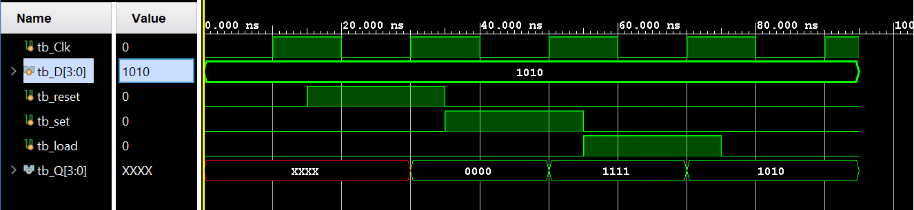
Part6-1-3
The above registers are categorized as parallel registers. There are other kinds of registers called shift registers. A shift register is where binary data can be stored and then shifted left or right when the control signal is asserted. Shift registers can be sub-categorized into parallel load serial out, serial load parallel out, or serial load serial-out shift registers. They may or may not have reset signals.
In Xilinx FPGA, LUT can be used as a serial shift register with one-bit input and one-bit output using one LUT as SRL32 provides efficient design (instead of cascading up to 32 flip-flops), provided the code is written properly. It may or may not have enabled a signal. When the enable signal is asserted, the internal content is shifted by a one-bit position and a new bit value is shifted. Here is a model for a simple one-bit serial shift in and shift out register without enabling signal. It is modeled to shift for 32 cycles before the shifted bit is brought out. This model can be used to implement a delay line.
module simple_one_bit_serial_shift_register_behavior(input Clk, input
ShiftIn, output ShiftOut);
reg [31:0] shift_reg;
always @(posedge Clk)
shift_reg <= {shift_reg[30:0], ShiftIn};
assign ShiftOut = shift_reg[31];
endmodule
The above model can be modified if we want to implement a delay line of less than 32 clocks. Here is the model for the delay line of 3 clocks.
module delay_line3_behavior(input Clk, input ShiftIn, output ShiftOut);
reg [2:0] shift_reg;
always @(posedge Clk)
shift_reg <= {shift_reg[1:0], ShiftIn};
assign ShiftOut = shift_reg[2];
endmodule
Model a 1-bit delay line shift register using the above code. Develop a testbench and simulate the design using the stimuli provided below. Assign Clk, ShiftIn, and output ShiftOut. Verify the design in hardware.
lab6_1_3.v
module delay_line3_behavior(input Clk, input ShiftIn, output ShiftOut);
reg [2:0] shift_reg;
always @(posedge Clk)
shift_reg <= {shift_reg[1:0], ShiftIn};
assign ShiftOut = shift_reg[2];
endmodule
- View the schematic of the synthesized design
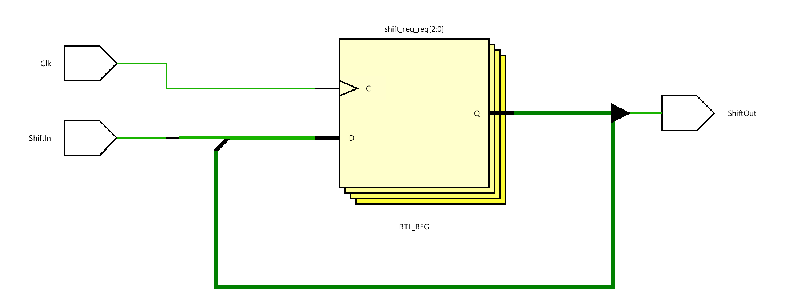
- Develop a testbench to test (see waveform above), perform behavioral simulation for 100ns, and validate the design.
tb.v
module tb();
// Testbench signals
reg tb_Clk;
reg ShiftIn;
wire ShiftOut;
// Instantiate the 4-bit register
delay_line3_behavior uut(
.Clk(tb_Clk),
.ShiftIn(ShiftIn),
.ShiftOut(ShiftOut)
);
// Generate the clock signal
initial begin
tb_Clk = 0;
forever #10 tb_Clk = ~tb_Clk; // Toggle the clock every 10 time units
end
// Test sequence
initial begin
// Initialize Inputs
ShiftIn = 0;
// Apply test vectors
#10; ShiftIn = 1; // Reset the register
#40; ShiftIn = 0;
#20; ShiftIn = 1;
#40; ShiftIn = 0; // Hold the data
#50; $finish; // End the simulation
end
endmodule
We can run a Simulation to check the code by clicking the Run Simulation under the SIMULATION and choosing the first Run Behavioral Simulation.
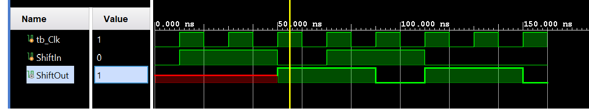
Part6-1-4
The following code models a four-bit parallel in shift left register with load and shift enable signal.
module Parallel_in_serial_out_load_enable_behavior(input Clk, input ShiftIn,
input [3:0] ParallelIn, input load, input ShiftEn, output ShiftOut, output
[3:0] RegContent);
reg [3:0] shift_reg;
always @(posedge Clk)
if(load)
shift_reg <= ParallelIn;
else if (ShiftEn)
shift_reg <= {shift_reg[2:0], ShiftIn};
assign ShiftOut = shift_reg[3];
assign RegContent = shift_reg;
endmodule
Model a 4-bit parallel in the left shift register using the above code. Develop a testbench and simulate the design using the stimuli provided below.
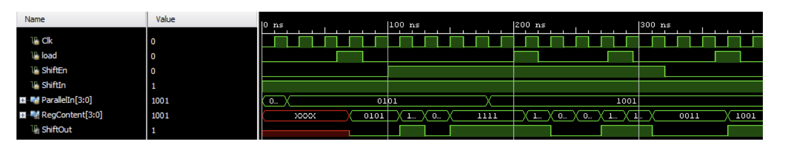
lab6_1_4.v
module Parallel_in_serial_out_load_enable_behavior(input Clk, input ShiftIn,
input [3:0] ParallelIn, input load, input ShiftEn, output ShiftOut, output
[3:0] RegContent);
reg [3:0] shift_reg;
always @(posedge Clk)
if(load)
shift_reg <= ParallelIn;
else if (ShiftEn)
shift_reg <= {shift_reg[2:0], ShiftIn};
assign ShiftOut = shift_reg[3];
assign RegContent = shift_reg;
endmodule
- View the schematic of the synthesized design
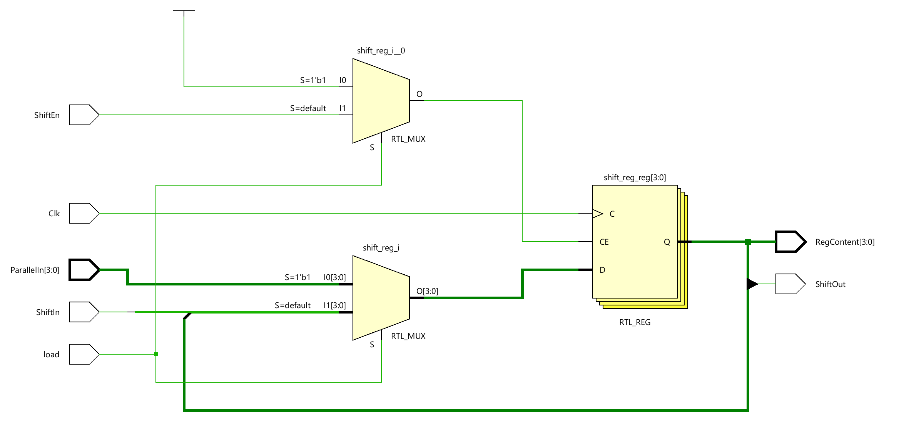
- Develop a testbench to test (see waveform above), perform behavioral simulation for 100ns, and validate the design.
tb.v
module tb;
// Testbench signals
reg tb_Clk;
reg ShiftIn;
reg load;
reg [3:0] ParallelIn;
reg ShiftEn;
wire ShiftOut;
wire [3:0] RegContent;
// Instantiate the 4-bit register
Parallel_in_serial_out_load_enable_behavior uut(
.Clk(tb_Clk),
.ShiftIn(ShiftIn),
.ParallelIn(ParallelIn),
.load(load),
.ShiftEn(ShiftEn),
.RegContent(RegContent),
.ShiftOut(ShiftOut)
);
// Generate the clock signal
initial begin
tb_Clk = 0;
forever #10 tb_Clk = ~tb_Clk; // Toggle the clock every 10 time units
end
// Test sequence
initial begin
// Initialize Inputs
ShiftIn = 1;
ParallelIn = 4'd0;
load = 0;
#20 ParallelIn = 4'b0101;
// Apply test vectors
#40; load = 1; // Reset the register
#20; load = 0;
#20; ShiftEn = 1;
#80; ParallelIn = 4'b1001;
#20; load =1;
#20; load = 0;
#50; $finish; // End the simulation
end
endmodule
We can run a Simulation to check the code by clicking the Run Simulation under the SIMULATION and choosing the first Run Behavioral Simulation.
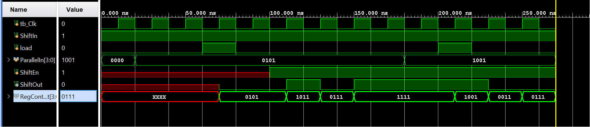
Part6_1_5
Write a model for a 4-bit serial in parallel out shift register. Develop a testbench and simulate the design. Assign Clk, ShiftEn, ShiftIn, ParallelOut, and ShiftOut.
lab6_1_5.v
module sipo_shift_register(
input clk,
input shiftEn,
input shiftIn,
output reg [3:0] parallelOut,
output shiftOut
);
// ShiftOut is the last bit of parallelOut
assign shiftOut = parallelOut[0];
always @(posedge clk) begin
if (shiftEn) begin
// Shift the register and insert the new bit
parallelOut <= {shiftIn, parallelOut[3:1]};
end
end
endmodule
- View the schematic of the synthesized design
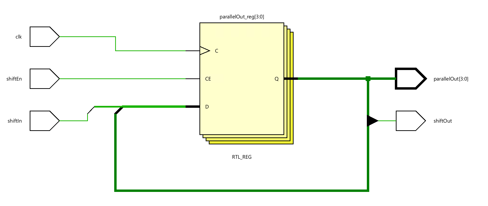
- Develop a testbench to test (see waveform above), perform behavioral simulation for 100ns, and validate the design.
tb.v
module tb;
// Testbench signals
reg tb_Clk;
reg shiftEn;
reg shiftIn;
wire shiftOut;
wire [3:0] parallelOut;
// Instantiate the 4-bit register
sip_shift_register uut(
.clk(tb_Clk),
.shiftEn(shiftEn),
.shiftIn(shiftIn),
.parallelOut(parallelOut),
.shiftOut(shiftOut)
);
// Generate the clock signal
initial begin
tb_Clk = 0;
forever #10 tb_Clk = ~tb_Clk; // Toggle the clock every 10 time units
end
// Test sequence
initial begin
// Initialize Inputs
shiftEn = 0;
shiftIn = 1;
#40; shiftEn = 1;
#40; shiftEn = 0;
#40; shiftEn = 1;
#40; shiftEn = 0;
#40; shiftEn =0;
shiftIn = 0;
#40;shiftEn = 1;
#40; shiftEn = 0;
#40; shiftEn = 1;
#40; shiftEn = 0;
#50; $finish; // End the simulation
end
endmodule
We can run a Simulation to check the code by clicking the Run Simulation under the SIMULATION and choosing the first Run Behavioral Simulation.
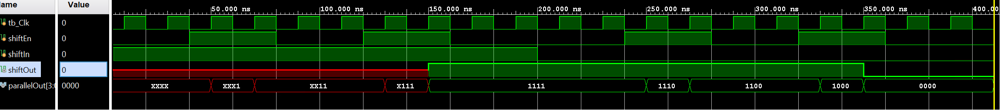
Counters
Counters can be asynchronous or synchronous. Asynchronous counters count the number of events solely using an event signal. On the other hand, synchronous counters use a common clock signal so that when several flip-flops must change state, the state changes occur simultaneously.
A binary counter is a simple counter that counts values up when an enable signal is asserted and will reset when the reset control signal is asserted. Of course, a clear signal will have a higher priority over the enabled signal. The following diagram shows such a counter. Clear is an asynchronous negative logic signal, whereas Enable is the synchronous positive logic signal.
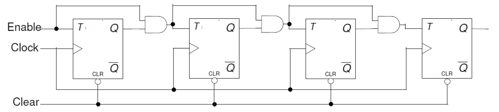
Part6-2-1
Design an 8-bit counter using T flip-flops, extending the above structure to 8-bits. Your design needs to be hierarchical, using a T flip-flop in behavioral modeling, and the rest should be either in dataflow or gate-level modeling. Develop a testbench and validate the design. Assign Clock input, Clear_n, Enable, and Q.
lab6_2_1.v
module t_flip_flop(
input clk,
input T,
input clrn,
output reg Q
);
always @(posedge clk or negedge clrn) begin
if (!clrn) Q <= 0;
else if (T) Q <= ~Q;
end
endmodule
module t_counter_8bit(
input clk,
input enable,
input clrn,
output [7:0] Q
);
wire [7:0] T; // Toggle signal for each flip-flop
// Generate toggle signals based on enable and previous Q outputs
// Here, we assume a simple enable logic for demonstration
assign T[0] = enable; // LSB toggles on every clock when enabled
genvar i;
generate
for (i = 1; i < 8; i = i + 1) begin : gen_toggle
assign T[i] = enable & Q[i-1:0]; // Next bit toggles when all lower bits are high
end
endgenerate
// Instantiate 8 T flip-flops
genvar j;
generate
for (j = 0; j < 8; j = j + 1) begin : gen_tff
t_flip_flop tff(
.clk(clk),
.T(T[j]),
.clrn(clrn),
.Q(Q[j])
);
end
endgenerate
endmodule
- View the schematic of the synthesized design
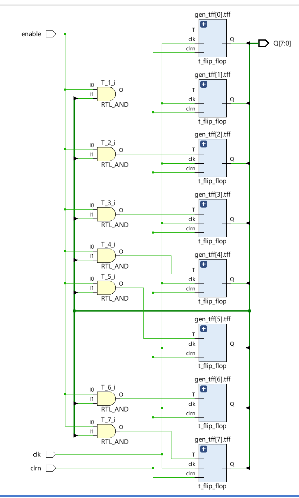
- Develop a testbench to test (see waveform above), perform behavioral simulation for 100ns, and validate the design.
tb.v
module tb_t_counter_8bit;
reg clk = 0;
reg enable = 1;
reg clrn = 0;
wire [7:0] Q;
t_counter_8bit counter(
.clk(clk),
.enable(enable),
.clrn(clrn),
.Q(Q)
);
// Clock generation
always #5 clk = ~clk;
initial begin
// Test clear functionality
enable =0;
#20
enable =1;
#20 clrn = 1;
// Observe counting
#60;
// Test pause functionality
enable = 0;
#50;
// Resume counting
enable = 1;
#100;
$finish;
end
endmodule
We can run a Simulation to check the code by clicking the Run Simulation under the SIMULATION and choosing the first Run Behavioral Simulation.
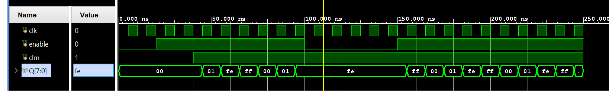
Part6-2-2
Counters can also be implemented using D flip-flops since a T flip-flop can be constructed using a D flip-flop as shown below。
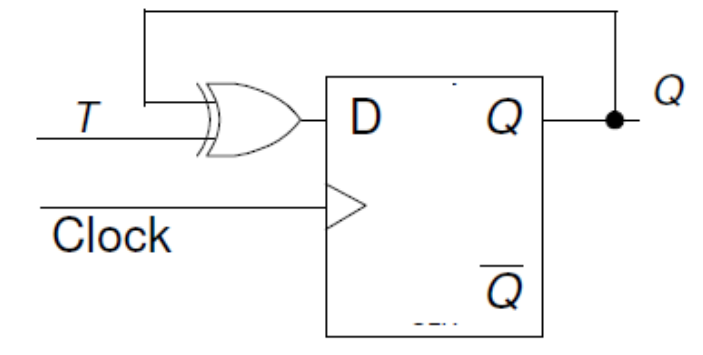
Modify the 8-bit counter using D flip-flops. The design should be hierarchical, defining D flip-flop in behavioral modeling, creating T flip-flop from the D flip-flop, implementing additional functionality using dataflow modeling. Assign Clock input, Clear_n, Enable, and Q. Implement the design and verify the functionality of the hardware.
lab6_2_2.v
//D Flip-Flop Module (Behavioral Modeling)
module d_flip_flop(
input clk,
input D,
input clr,
output reg Q
);
always @(posedge clk or posedge clr) begin
if (clr) Q <= 0;
else Q <= D;
end
endmodule
//T Flip-Flop Using D Flip-Flop
module t_flip_flop_from_d(
input clk,
input T,
input clr,
output Q
);
wire D;
assign D = Q ^ T; // Toggling logic
d_flip_flop dff(
.clk(clk),
.D(D),
.clr(clr),
.Q(Q)
);
endmodule
//8-bit Counter Using T Flip-Flops Created from D Flip-Flops
module counter_8bit_from_t(
input clk,
input enable,
input clr,
output [7:0] Q
);
wire [7:0] T; // Generate toggle signals
assign T[0] = enable; // LSB toggles when enabled
genvar i;
generate
for (i = 1; i < 8; i = i + 1) begin : gen_T_signals
assign T[i] = enable & &Q[i-1:0]; // Conditional toggle logic for hierarchical counter
end
endgenerate
// Instantiate T flip-flops
genvar j;
generate
for (j = 0; j < 8; j = j + 1) begin : gen_tff
t_flip_flop_from_d tff(
.clk(clk),
.T(T[j]),
.clr(clr),
.Q(Q[j])
);
end
endgenerate
endmodule
- View the schematic of the synthesized design
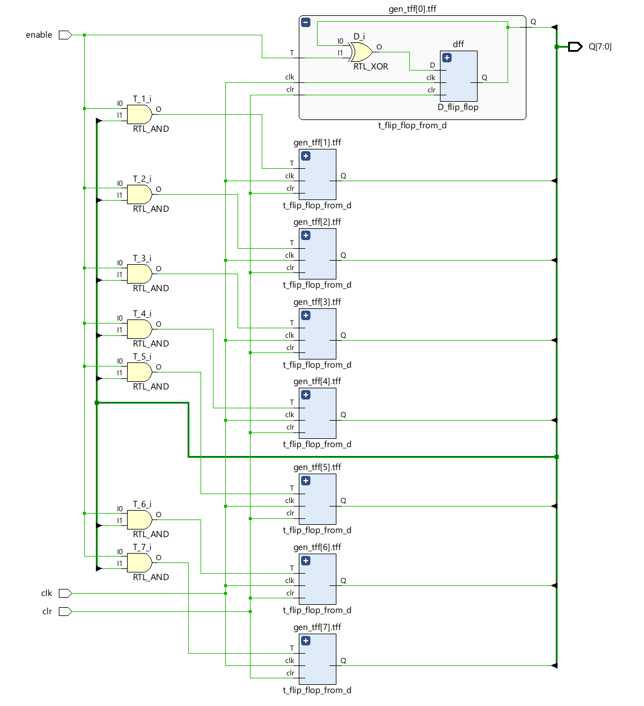
Part6-2-3
Other types of binary counters include (i) up, (ii) down, and (iii) up-down. Each one of them may have count enabled and reset as control signals. There may be a situation where you may want to start the count up/down from some non-zero value and stop when some other desired value is reached. Here is an example of a 4-bit counter which starts with a value of 10 and counts down to 0. When the count value 0 is reached, it will re-initialize the count to 10. At any time, if the enable signal is negated, the counter pauses counting until the signal is asserted back. It assumes that the load signal is asserted to load the predefined value before counting has begun.
reg [3:0] count;
wire cnt_done;
assign cnt_done = ~| count;
assign Q = count;
always @(posedge Clock)
if (Clear)
count <= 0;
else if (Enable)
if (Load | cnt_done)
count <= 4'b1010; // decimal 10
else
count <= count - 1;
Model a 4-bit down-counter with synchronous load, enable, and clear as given in the code above. Develop a testbench (similar to the waveform below) and verify the design works. Assign Clock input, Clear, Enable, Load, and Q.
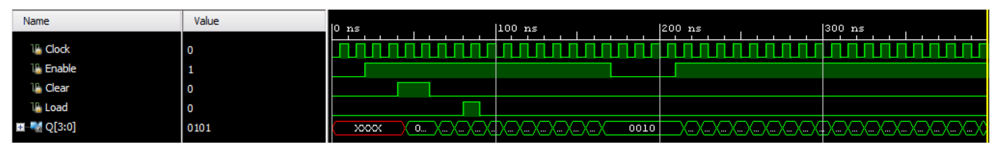
lab6_2_3.v
// Define a 4-bit down-counter module with Clock, Enable, Clear, and Load signals
module down_counter_4_bit (
input clk, // Clock input for synchronous operation
input enable, // Enable signal to allow the counter to count
input clear, // Clear signal to reset the counter to 0
input load, // Load signal to preload the counter with a specific value (in this case, decimal 10)
output [3:0] Q // 4-bit output to represent the current count value
);
reg [3:0] count; // Internal 4-bit register to hold the current count
wire cnt_done; // Signal to indicate when the counter has reached 0
// Determine if the counter has reached 0 using a NOR reduction operator
// This will be true when all bits of 'count' are 0
assign cnt_done = ~| count;
// Output the current value of the count register
assign Q = count;
// Synchronous logic block, sensitive to the positive edge of the clock
always @(posedge clk) begin
if (clear) begin
count <= 0; // If clear is asserted, reset the count to 0
end else if (enable) begin // Proceed if the counter is enabled
if (load | cnt_done) begin
count <= 4'b1010; // If the load is asserted or count has reached 0, preload count with 10 (4'b1010)
end else begin
count <= count - 1; // If not loading and not done, decrement the count by 1
end
end
end
endmodule
- view the schematic of the synthesized design
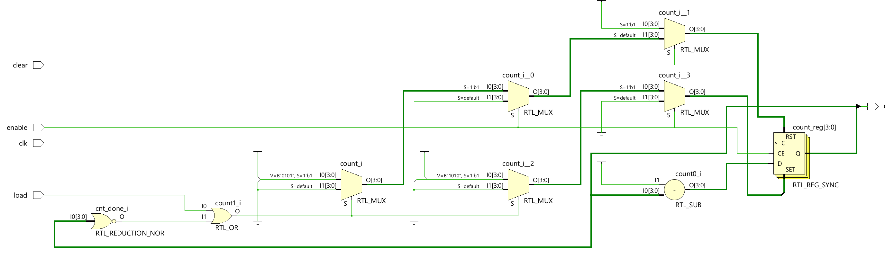
- Develop a testbench to test (see waveform above), perform behavioral simulation for 100ns, and validate the design.
tb.v
module tb_t_counter_4bit;
reg clk;
reg enable;
reg clear;
reg load ;
wire [3:0] Q;
down_counter_4_bit counter(
.clk(clk),
.enable(enable),
.clear(clear),
.load(load),
.Q(Q)
);
// Clock generation
always #5 clk = ~clk;
initial begin
// Test clear functionality
clk = 0;
enable =0;
clear = 0;
load = 0;
#20
enable =1;
#20 clear = 1;
#20 clear =0;
// Observe counting
#20 load = 1;
#10 load =0;
#50;
// Resume counting
enable = 0;
#40 enable = 1;
#100;
$finish;
end
endmodule
We can run Simulation to check the code by clicking the Run Simulation under the SIMULATION and choose the first Run Behavioral Simulation.
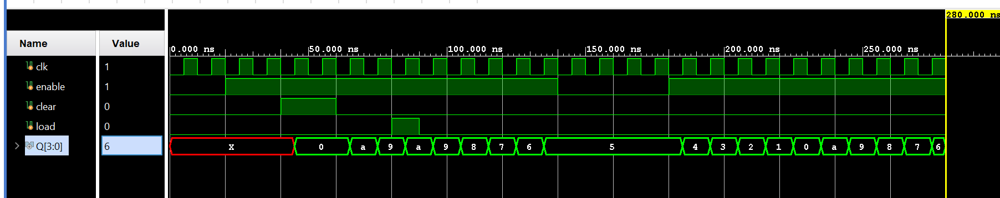
Conclusion
In this lab, you learned how various kinds of registers and counters work. You modeled and verified the functionality of these components. These components are widely used in a processor system design.